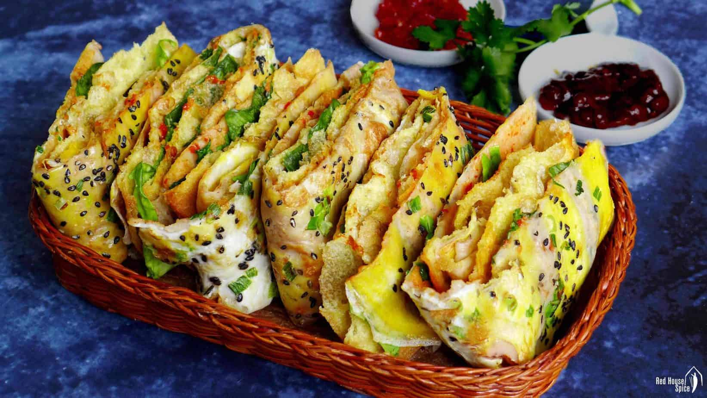
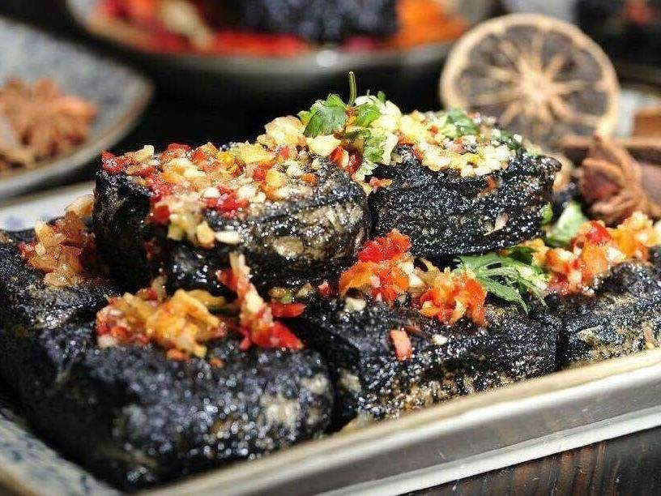
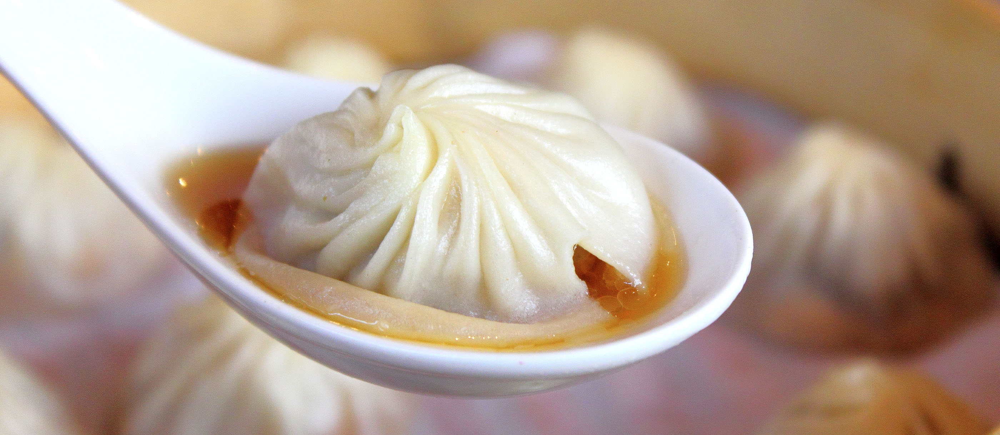
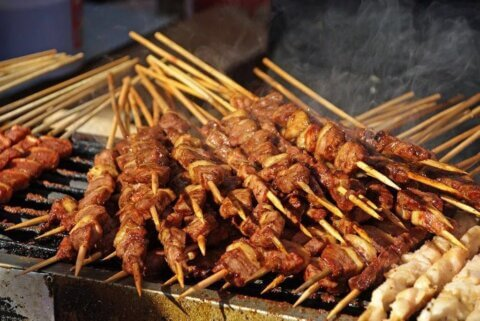
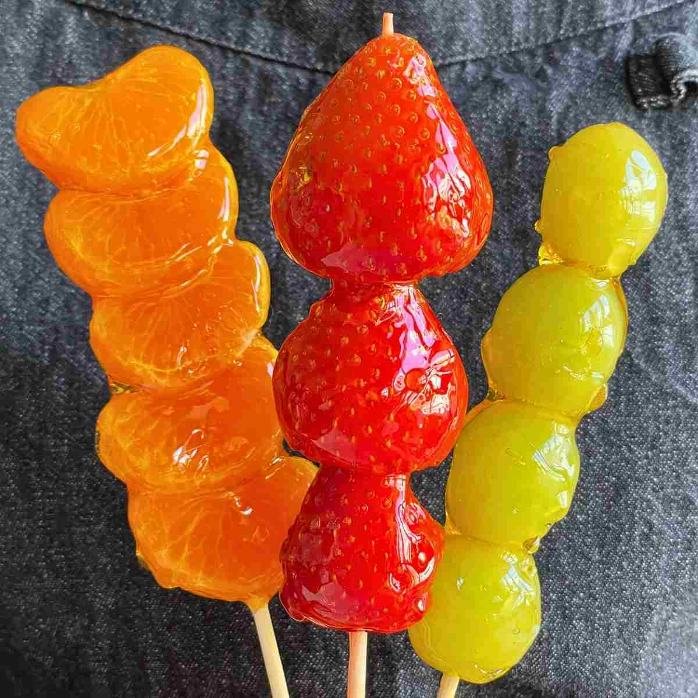
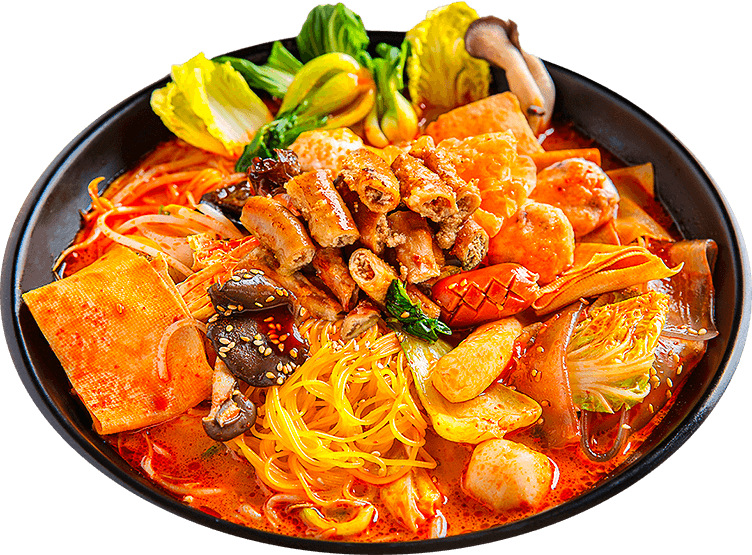
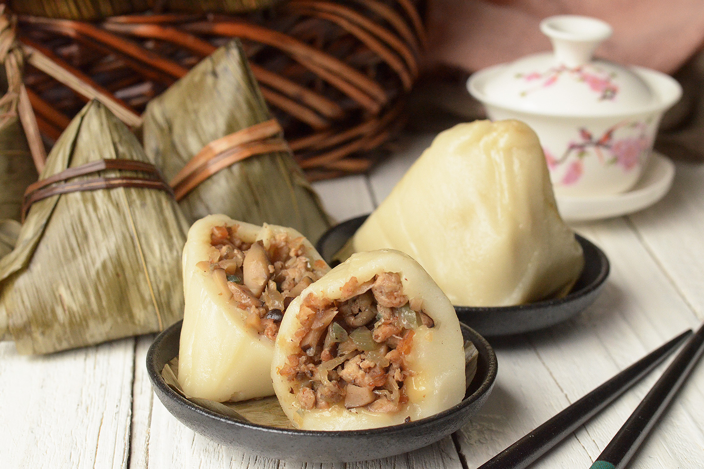
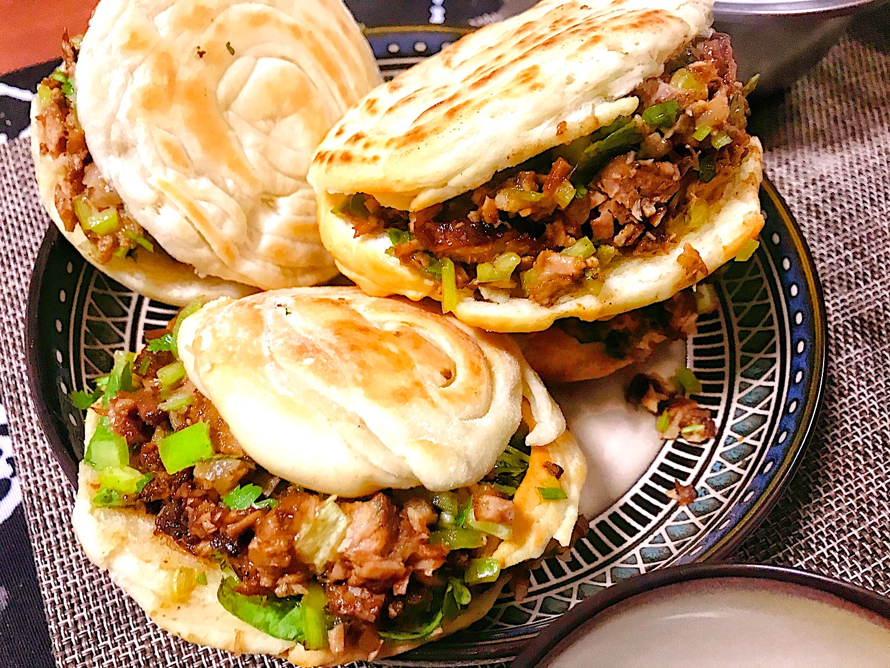

Jianbing (煎饼)
A popular Chinese crepe, often considered as favorite Chinese street food, especially for breakfast.
Jianbing, one of the most popular breakfast street food, often eaten on the go - It
consists
of a thin crepe batter, egg, garnishes like black sesame seeds and chopped scallions, fried dough sticks which
they called BaoCui, sweet and savory bean sauce, and other optional fillings like bacon.
📷 Source:
Red House Spice

Stinky Tofu (臭豆腐)
Fermented tofu with a strong smell but rich, addictive flavor.
Stinky tofu, one of China's most iconic street foods - Despite for its strong smell,
yet people still loved for its crispy outside and soft, flavorful inside. Fermented in a special brine, the
tofu develops a bold flavor that pairs perfectly with chili sauce, garlic, and pickled vegetables. Many say
that the the stronger the smell are, the better the tofu is.
📷 Source: Chinese Food Wiki

Xiaolongbao (小笼包)
Delicate steamed dumplings filled with juicy pork and rich, savory broth.
Xiaolongbao, Originating from Shanghai - These famous soup dumplings are eaten carefully
to avoid
spilling the hot soup inside. A small bite releases the flavorful broth before enjoying the tender meat
filling.
📷 Source: tasteatlas

Chuanr (串儿)
Skewers of spiced meat, grilled over open flames for a smoky, savory flavor.
Chaunr, a late-night street food favorite in northern Chin - Chuanr is often made with
lamb and
seasoned with cumin, chili, and sesame. Best enjoyed hot off the grill, usually with a cold drink.
📷 Source: LTL

Baozi (包子)
Steamed buns with various fillings like pork, beef, or vegetables.
Baozi, a staple breakfast across China - Baozi come with countless fillings such as
pork, beef, mushrooms, or red bean paste. Sold fresh in bamboo baskets, they’re a comforting and portable
street food..
📷 Source: Omeida

Tanghulu (糖葫芦)
Skewered fruits or berries coated in hardened sugar syrup.
Tanghulu, a famous street food that can be founded at every night market in China -
Traditionally made with hawthorn berries, tanghulu offers a crunchy, sweet, and tart bite. Nowadays,
strawberries, grapes, and even kiwi are used, making it a colorful favorite among children and adults.
📷 Source: honestfoodtalks

Malatang (麻辣烫)
A spicy Sichuan-style hotpot where ingredients are cooked in numbing broth.
Malatang, popular for its mix-and-match style of eating - Chooseable vegetables, meats,
and noodles
by customers are cooked in a numbing, spicy broth flavored with Sichuan peppercorns. .
📷 Source: SORIMARA

Zongzi (粽子)
Sticky rice dumplings wrapped in bamboo leaves, often with savory or sweet fillings.
Zongzi, traditionally eaten during the Dragon Boat Festival - Zongzi can be filled with
pork belly, salted egg yolk, or sweet red bean paste. The bamboo leaves give the rice a distinctive fragrance.
📷 Source: asianinspirations

Roujiamo (肉夹馍)
Known as the “Chinese hamburger,” filled with stewed pork inside flatbread.
Roujiamo, originates from Shaanxi province and is beloved across China - Known as the
“Chinese hamburger,” roujiamo originated in Shaanxi province. The slow-cooked meat, often shredded and
seasoned with spices, makes it one of the most beloved street snacks across China.
📷 Source: The Food Dictator

Chow Mein (炒面)
Stir-fried noodles with vegetables, soy sauce, and sometimes meat.
Chow Mein, a classic street food that has spread worldwide from China - Chow mein is
quick, filling, and flavorful. Its popularity has spread worldwide, with countless regional variations.
📷 Source: curatedkitchenware